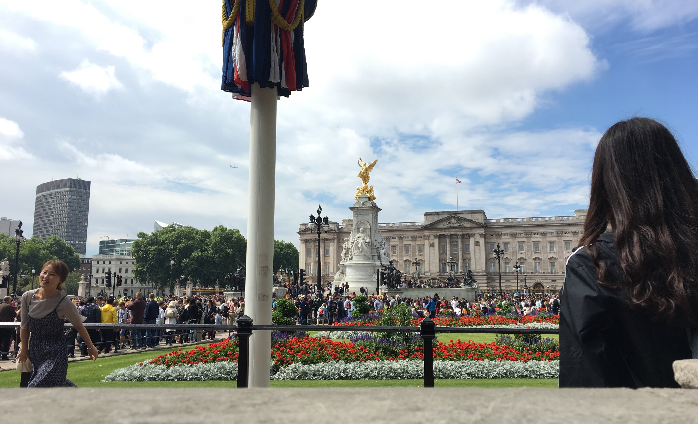

|

|
Bienvenue dans un des 4 pays des îles britanniques.
Londres, sa capitale, située sur la Tamise, fleuve au sud de l’Angleterre, abrite de célèbres monuments comme Big Ben, La Tour de Londres et d’autres
tout aussi intéressants comme The Tower Bridge.
La reine d’Angleterre Elisabeth II réside dans la capitale, dans le célèbre palais royal, Buckingham Palace. Une partie du
palais est ouverte au public mais seulement l’été. Vous pourrez assister quotidiennement à la relève de la garde qui a lieu à 10h45, pour une durée d’environ 45 minutes.
|